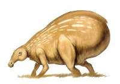

Lake Country - Romantic Seclusion
Come and visit Naboo, the planet full of beautiful vast landscapes, extraordinary creatures, and a history rich of heritage!
Lake Country is the perfect place for a romantic getaway on Naboo. Secluded by beautiful lakes and majestic mountains, Lake Country makes for a wonderful break from the fast pace of today's world. Sparsely populated by farmers, Lake Country has wide meadows of grass and wildflowers, waterfalls and lakes. This is the home to the well known and popular Shaak.
"I was thinking of staying out in the Lake Country. There's some places out there that are very isolated."
-Padme Amidala
Accomidations here include a variety of lakeside palaces for sale by the week. Please visit our Plan Your Trip page for more information on how to book your Travel Naboo package today!